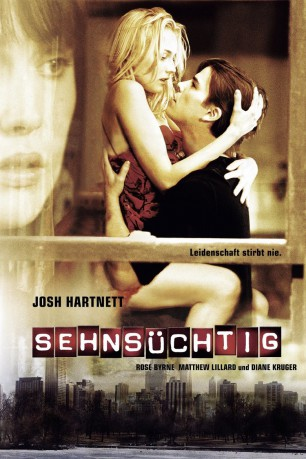

gesehen am 21.11.2016
gesehen am 21.11.2016Alternativ: Wicker Park gesehen am 21.11.2016
 
 IMDB-Wertung: 7.0 / 10
IMDB-Wertung: 7.0 / 10  Metascore:
Metascore: 
Zwei Jahre, nachdem sie nach der ersten Liebesnacht spurlos aus seinem Leben verschwand, glaubt Investmentbanker Matthew, seine Verflossene Lisa in einem Restaurant in Chicago wieder erkannt zu haben. Obwohl er eigentlich dringenden Geschäftsterminen nachkommen müsste und obendrein glücklich verheiratet ist, lässt Matthew das Geschehen nicht mehr los. Er folgt dem Phantom geradewegs in ein verschlungenes Abenteuer...\r Remake des französischen Erfolgsfilms L'Appartement - Lügen und Liebe.
Jahr: 2004
Dauer: 110 Minuten
FSK: 0
Land: USA Studio: MGMTonspuren:
Untertitel: Englisch,
Auflösung: 720p (1280x720) Größe: 4474 MB
Genre: Thriller, Drama, Liebe, Mystery
Regisseur: Paul McGuigan
Drehbuch: Gilles Mimouni, Brandon Boyce
Soundtrack: Cliff Martinez
Darsteller:
 Josh Hartnett als Matthew
Josh Hartnett als Matthew Rose Byrne als Alex
Rose Byrne als Alex Matthew Lillard als Luke
Matthew Lillard als Luke Diane Kruger als Lisa
Diane Kruger als Lisa Christopher Cousins als Daniel
Christopher Cousins als Daniel Jessica Paré als Rebecca
Jessica Paré als Rebecca Vlasta Vrana als Jeweller
Vlasta Vrana als Jeweller Ted Whittall als Walter
Ted Whittall als Walter Mark Camacho als Bartender
Mark Camacho als Bartender Marcel Jeannin als Theater Director
Marcel Jeannin als Theater Director Christian Paul als Orsino
Christian Paul als Orsino Richard Jutras als Hotel Manager
Richard Jutras als Hotel Manager Erika Rosenbaum als Waitress
Erika Rosenbaum als Waitress Gordon Masten als Hot Dog Vendor
Gordon Masten als Hot Dog Vendor Frank Fontaine als Priest
Frank Fontaine als PriestDatei: X:\2004(N-Z)\Sehnsüchtig (2004, FSK0, 1280x720).mkv seit 01.02.2016
Festplatte: HD 2003-2004-2005(A-F)
 Es gibt insgesamt 54 Filme in der Gruppe '2004(N-Z)'
Es gibt insgesamt 54 Filme in der Gruppe '2004(N-Z)'